Subdivide¶
参考
模式: 编辑模式
面板: Mesh Tools
菜单: ,
Subdividing splits selected edges and faces by cutting them in half or more, adding necessary vertices, and subdividing accordingly the faces involved, following a few rules, depending on the settings:
- When only one edge of a face is selected (Tri mode), triangles are subdivided into two triangles, and quads, into three triangles.
- When two edges of a face are selected:
- If the face is a triangle, a new edge is created between the two new vertices, subdividing the triangle in a triangle and a quad.
- If the face is a quad, and the edges are neighbors, we have three possible behaviors, depending on the setting of Corner Cut Type (the drop-down menu next to the Subdivide button, in Mesh Tools panel) See below for details.
- If the face is a quad, and the edges are opposite, the quad is just subdivided in two quads by the edge linking the two new vertices.
- When three edges of a face are selected:
- If the face is a triangle, this means the whole face is selected - it is then sub-divided in four smaller triangles.
- If the face is a quad, first the two opposite edges are subdivided as described above. Then, the “middle” edge is subdivided, affecting its new “sub-quad” as described above for only one edge.
- When four edges of a face (a quad) are selected, the face is subdivided into four smaller quads.
Options¶
These options are available in the Tool Panel after running the tool;
- Number of Cuts
- Specifies the number of cuts per edge to make. By default this is 1, cutting edges in half. A value of 2 will cut it into thirds, and so on.
- Smoothness
- Displaces subdivisions to maintain approximate curvature, The effect is similar to the way the subdivision modifier might deform the mesh.
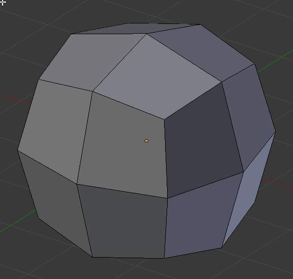
Mesh before subdividing. |
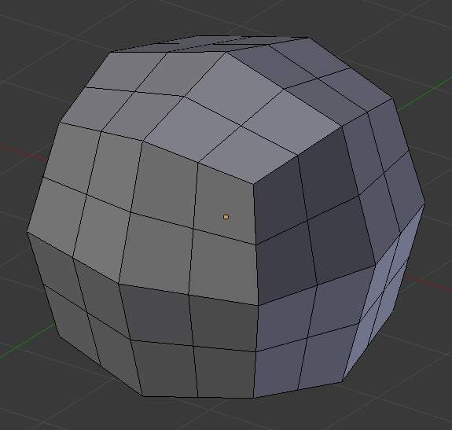
Subdivided with no smoothing. |
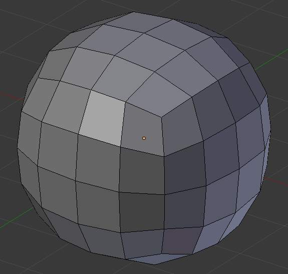
Subdivided with smoothing of 1. |
{kind=link}
{kind=link}
{kind=link}
- Quad/Tri Mode
- Forces subdivide to create triangles instead of ngons, simulating old behavior (see examples below)
- Corner Cut Type
This drop-down menu controls the way quads with only two adjacent selected edges are subdivided
- Fan
- the quad is sub-divided in a fan of four triangles, the common vertex being the one opposite to the selected edges.
- Innervert
- (i.e. “inner vertex”), The selected edges are sub-divided, then an edge is created between the two new vertices, creating a small triangle. This edge is also sub-divided, and the “inner vertex” thus created is linked by another edge to the one opposite to the original selected edges. All this results in a quad sub-divided in a triangle and two quad.
- 路径
- First an edge is created between the two opposite ends of the selected edges, dividing the quad in two triangles. Then, the same goes for the involved triangle as described above.
- Straight Cut
- Currently non functioning...
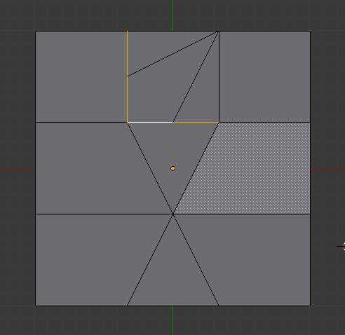
Fan cut type. |
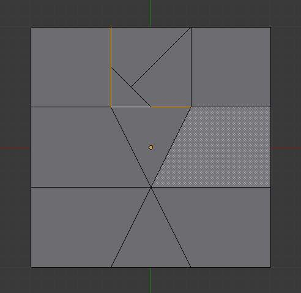
Innervert cut type. |
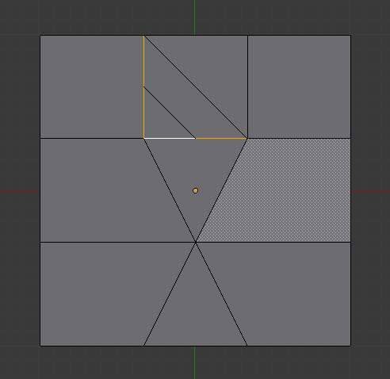
Path cut type. |
{kind=link}
{kind=link}
{kind=link}
- Fractal
- Displaces the vertices in random directions after the mesh is subdivided
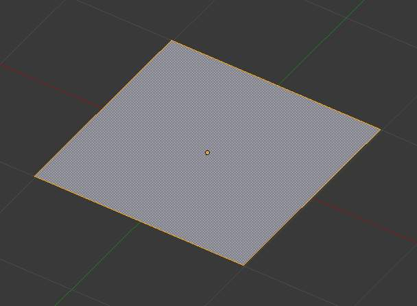
Plane before subdivision. |
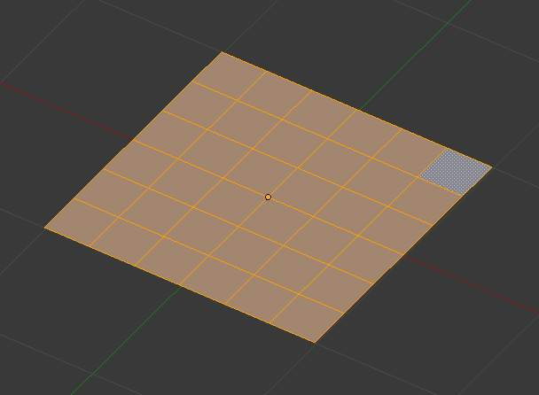
Regular subdivision. |
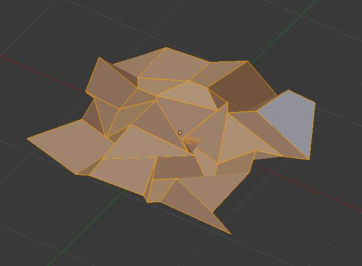
Same mesh with fractal added. |
{kind=link}
{kind=link}
{kind=link}
- Along Normal
- Causes the vertices to move along the their normals, instead of random directions
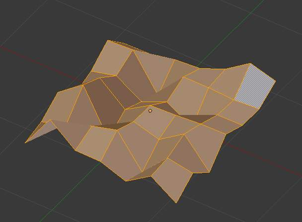
{kind=link}
Along normal set to 1.
- Random Seed
- Changes the random seed of the noise function, producing a different result for each seed value.
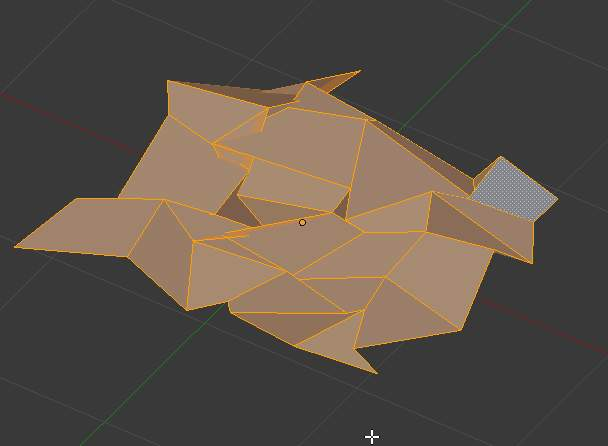
{kind=link}
Same mesh with a different seed value.
{kind=link}
{kind=link}
{kind=link}
{kind=link}
{kind=link}
{kind=link}
{kind=link}
{kind=link}
{kind=link}
{kind=link}
{kind=link}
{kind=link}
{kind=link}
{kind=link}
{kind=link}
{kind=link}
{kind=link}
{kind=link}